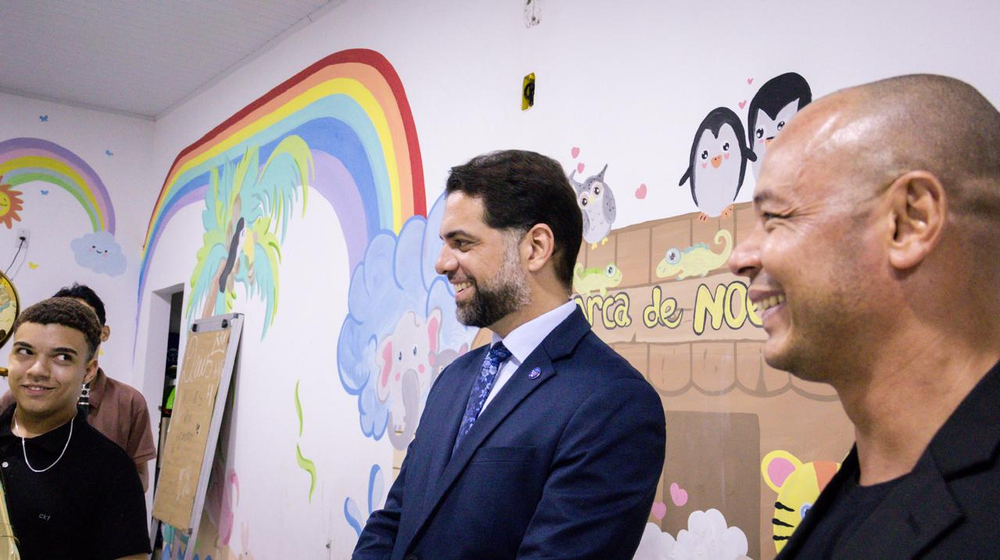

Destaque
Projeto no Santa Maria forma jovens músicos e prepara criação de nova orquestra
A iniciativa vem transformando a realidade de crianças e adolescentes no bairro Santa Maria, em Aracaju. Através do ensino gratuito de instrumentos de sopro e percussão, o projeto não apenas afasta os jovens de situações de vulnerabilidade, mas os prepara para integrar uma nova orquestra local, abrindo caminhos profissionais e sociais.
Ler matéria completa